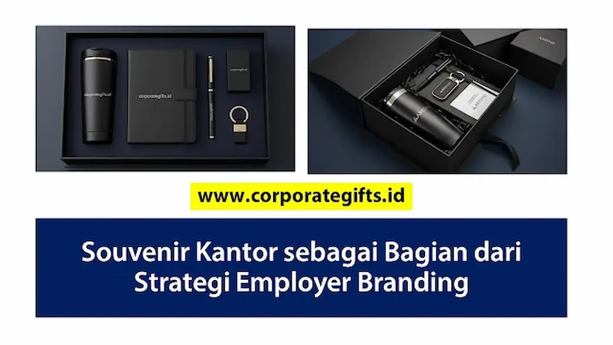

Corporate Gifts ID - Di tengah kompetisi memperebutkan talenta berbakat industri modern, strategi employer branding telah berevolusi melampaui penawaran kompensasi finansial dan jenjang karier semata. Identitas korporat yang kokoh, budaya apresiasi yang tulus, serta rasa dihargai menjadi faktor krusial yang menentukan apakah seorang karyawan akan bertahan dan berdedikasi tinggi. Salah satu instrumen berwujud yang memiliki dampak emosional luar biasa dalam strategi ini adalah pengadaan souvenir kantor yang dirancang secara tematik, fungsional, dan eksklusif.
Melalui cinderamata kantor yang dipersiapkan secara matang dengan paduan logo presisi, palet warna korporat yang elegan, serta pesan motivasi yang bermakna, manajemen memperlihatkan kepedulian nyata kepada seluruh jajaran tim. Ketika karyawan merasa diakui dan diapresiasi sejak hari pertama bergabung, mereka tidak hanya termotivasi memberikan performa terbaik, melainkan juga secara alami bertransformasi menjadi duta merek (brand advocates) yang bangga menyuarakan keunggulan tempat kerjanya kepada jejaring profesional eksternal.
Poin Kunci Souvenir sebagai Strategi Employer Branding:
- Daya Tarik Talenta: Paket welcome kit yang estetis dan fungsional meningkatkan daya tarik perusahaan di mata kandidat terbaik serta memicu viralitas positif di media sosial profesional.
- Retensi & Loyalitas: Apresiasi berupa cinderamata berkala memperkuat ikatan emosional karyawan, menekan rasio turnover, dan mendongkrak employee engagement.
- Konsistensi Kultur: Souvenir kerja harian berperan sebagai pengingat visual yang konstan terhadap visi, misi, dan nilai-nilai integritas korporat.
- Advokasi Organik: Penggunaan merchandise perusahaan di ranah publik bertindak sebagai media promosi gratis dan kredibel bagi reputasi institusi.
Mengapa Employer Branding Penting untuk Perusahaan
Employer branding adalah citra dan reputasi yang dimiliki perusahaan sebagai tempat bekerja di mata karyawan saat ini maupun calon kandidat di masa depan. Membangun reputasi tempat kerja idaman bukan lagi sekadar proyek sampingan departemen Human Resources (HR), melainkan pilar strategis manajemen bisnis yang berdampak langsung terhadap daya saing organisasi:
- Menarik Talenta Terbaik (Attracting Top Talent): Citra positif korporat yang tersebar luas mempercepat siklus rekrutmen. Kandidat unggulan akan lebih tertarik melamar ke perusahaan yang dikenal memiliki atmosfer apresiatif dan budaya kerja suportif.
- Meningkatkan Retensi dan Keterikatan (Employee Retention): Biaya merekrut dan melatih karyawan baru jauh lebih tinggi daripada mempertahankan staf yang sudah berpengalaman. Karyawan yang merasa diakui melalui apresiasi personal cenderung memiliki loyalitas tinggi dan bertahan lebih lama.
- Memperkuat Budaya Perusahaan (Company Culture): Keselarasan visual dan pengalaman harian di tempat kerja menyatukan persepsi tim. Identitas bersama yang tercermin lewat barang-barang kantor berkualitas menumbuhkan rasa persatuan dan kekompakan lintas divisi.
4 Peran Strategis Souvenir Kantor dalam Membangun Employer Branding
Mengapa media fisik seperti souvenir kantor memiliki pengaruh yang sangat mendalam terhadap psikologi karyawan? Berikut adalah 4 peran strategis utama yang menjadikannya investasi berharga bagi perusahaan:
1. Menciptakan Identitas yang Konsisten
Konsistensi identitas visual merupakan fondasi utama brand equity. Souvenir kantor berlogo presisi seperti buku agenda kerja kulit, pulpen eksekutif, dan lanyard kartu pegawai berfungsi sebagai pengingat konstan atas profesionalitas dan standar mutu perusahaan dalam aktivitas operasional harian.
2. Menumbuhkan Rasa Bangga dan Advokasi
Ketika karyawan menerima barang promosi atau cinderamata dengan mutu premium yang tidak pasaran, timbul rasa bangga personal. Karyawan tidak akan ragu membawa tumbler kantor saat berolahraga di gym akhir pekan, mengenakan jaket seragam saat berkumpul dengan rekan seprofesi, atau mengunggah foto paket hadiah di LinkedIn. Tindakan ini merupakan advokasi murni (word-of-mouth branding) yang sangat berharga.
3. Mendukung Program Onboarding yang Berkesan
Hari pertama bekerja adalah momen krusial yang menentukan persepsi awal karyawan baru terhadap profesionalisme manajemen. Menyambut karyawan di meja kerjanya dengan sebuah welcome kit karyawan baru yang dikemas rapi dalam hardbox eksklusif memberikan sambutan hangat, mengurangi kecemasan adaptasi, dan langsung menanamkan rasa memiliki (sense of belonging).
4. Menjadi Media Promosi Organik Tanpa Biaya Berulang
Berbeda dengan iklan digital yang berhenti tayang begitu anggaran habis, souvenir kantor berkualitas memiliki masa pakai yang panjang (1 hingga 3 tahun). Setiap kali karyawan bepergian dinas, menghadiri seminar industri, atau beraktivitas santai membawa tote bag kanvas atau botol minum berlogo perusahaan, mereka secara tidak langsung mempromosikan nama institusi kepada khalayak luas.

Pilihan item fungsional seperti tumbler stainless steel, agenda kerja deboss, dan earphone nirkabel menciptakan kesan tempat kerja modern dan peduli karyawan.
Matriks Implementasi Souvenir Berdasarkan Siklus Karyawan
Agar alokasi anggaran souvenir memberikan imbal hasil optimal terhadap employer branding, tim HR dan manajemen dapat memetakan kebutuhan cinderamata berdasarkan tahapan siklus hidup karyawan (employee lifecycle). Berikut adalah panduan kurasi item yang direkomendasikan:
| Tahapan Karyawan | Rekomendasi Souvenir Kantor | Tujuan Employer Branding | Dampak Psikologis |
|---|---|---|---|
| Onboarding Baru | New Employee Welcome Kit: Tumbler SUS304, agenda notebook kulit, pulpen metal grafir, lanyard sublimasi, dan kaos seragam polo pique. | Menciptakan impresi awal profesional dan memfasilitasi integrasi nilai-nilai budaya korporat. | Karyawan merasa diterima dengan antusias, dihargai, dan bangga bergabung dengan institusi. |
| Milestone & Kinerja | Employee Loyalty Reward Box: Plakat kristal 3D, powerbank wireless PD 20W, jam meja eksklusif, dan pen rollerball grafir nama. | Mengapresiasi dedikasi tahunan (1, 3, 5, 10 tahun) dan pencapaian target kerja luar biasa. | Memperkuat rasa pencapaian pribadi, loyalitas jangka panjang, dan motivasi kerja berkelanjutan. |
| Gathering & Retreat | Goodie bag event casual: Totebag kanvas tebal, payung lipat anti-UV otomatis, topi bordir komputer, dan botol minum sport infuser. | Mempererat ikatan persaudaraan tim, melepas kejenuhan kerja, dan merayakan kerja sama solid. | Rasa kebersamaan yang cair, hilangnya sekat hierarki kaku, dan semangat tim meningkat. |
| Alumni & Perpisahan | Executive Gift Set: Cinderamata plakat kayu ukir, notebook custom memo pesan tim, dan hamper kenangan premium. | Menjaga silaturahmi positif purnatugas agar eks-karyawan tetap menjadi duta dan mitra relasi yang loyal. | Meninggalkan kesan perpisahan yang terhormat, dihargai hingga akhir masa bakti, dan bebas gesekan. |
Tips Memilih Souvenir Kantor yang Selaras dengan Nilai Perusahaan
Memilih souvenir perusahaan yang tepat membutuhkan kejelian agar tidak berujung menjadi pemborosan anggaran tanpa dampak nyata. Pertimbangkan 3 pilar kurasi utama berikut sebelum memutuskan pemesanan vendor:
-
Selaras dengan Nilai dan Budaya Perusahaan (Brand Alignment):
Jika institusi Anda mengedepankan nilai inovasi teknologi modern, sertakan produk pintar seperti wireless power bank atau smart tumbler indikator suhu. Sebaliknya, bagi organisasi yang mengusung prinsip keberlanjutan lingkungan (ESG), pilihlah perlengkapan dari bahan bambu ramah lingkungan, sedotan stainless, dan tas jinjing blacu organik. -
Prioritaskan Fungsionalitas dan Durabilitas Produk (High Utility &
Quality):
Souvenir yang rapuh, mudah pecah, atau tintanya macet justru akan merusak citra perusahaan dan menimbulkan kesan pelit. Pastikan material dasar memiliki sertifikasi terpercaya (seperti food-grade SUS 304 pada wadah minum) sehingga barang benar-benar digunakan karyawan dalam rutinitas kerja harian. -
Eksklusif dan Berikan Sentuhan Personalisasi (Personalization Touch):
Personalisasi memberikan efek psikologis yang sangat mendalam. Menambahkan nama masing-masing karyawan melalui teknik grafir laser presisi atau bordir nama komputer pada apparel mengubah cinderamata massal biasa menjadi benda berharga yang memiliki nilai emosional tinggi.
Dampak dan Pengukuran Efektivitas Souvenir terhadap Employer Branding
Souvenir kantor yang dikelola dengan perencanaan strategis bukanlah pos beban biaya (expense), melainkan investasi reputasi (reputational asset). Dampak positif program cinderamata kantor dapat dievaluasi secara berkala melalui beberapa parameter kinerja objektif:
- Survei Kepuasan Karyawan (Employee Net Promoter Score - eNPS): Memantau kenaikan skor kepuasan staf dalam survei internal berkala terhadap fasilitas dan perhatian yang diberikan perusahaan.
- Rasio Retensi Talenta Kunci: Penurunan angka pengunduran diri staf berprestasi (voluntary turnover) pada tahun-tahun pertama masa adaptasi kerja.
- Tingkat Advokasi Media Sosial: Jumlah interaksi, unggahan unboxing welcome kit, dan tag lokasi kantor yang dibagikan secara sukarela oleh karyawan di platform media sosial.
- Kualitas Rekrutmen: Peningkatan kuantitas dan profil kualifikasi kandidat yang melamar lowongan kerja baru melalui rekomendasi internal (employee referral).
Kesimpulan: Investasi Reputasi Jangka Panjang
Membangun employer branding yang berkesan dan dihormati tidak melulu membutuhkan kampanye periklanan berbiaya miliaran rupiah. Kerap kali, langkah nyata yang paling menyentuh hati karyawan bermula dari hal-hal yang dapat mereka sentuh, gunakan, dan banggakan setiap hari di meja kerja mereka.
Souvenir kantor yang dirancang dengan mutu tinggi dan penuh perhatian adalah wujud konkret penghargaan manajemen kepada aset terbesar perusahaan: manusia di dalamnya. Ketika karyawan merasa dimanusiakan dan dibanggakan, institusi Anda tidak hanya berhasil mencetak tempat kerja idaman, melainkan juga menumbuhkan ekosistem bisnis yang berkelanjutan dan siap memenangkan persaingan masa depan.
Pertanyaan Seputar Souvenir Kantor dan Employer Branding (FAQ)

Ditulis oleh: Arinda Zakia
Senior Corporate Gifting SpecialistPraktisi kurasi souvenir B2B dan merchandise korporat dengan pengalaman lebih dari 8 tahun membantu ratusan institusi terkemuka di Indonesia menyusun strategi branding dan apresiasi karyawan.
Lihat Profil Lengkap & Panduan Lainnya